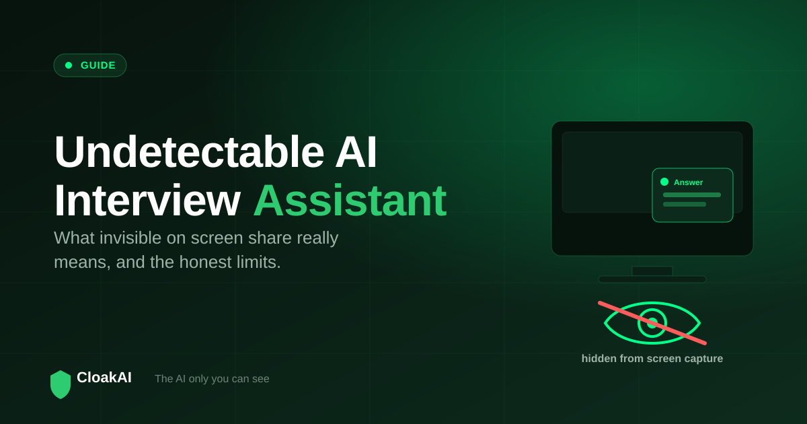
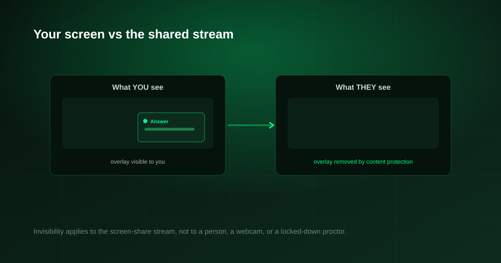

Almost every interview tool now claims to be "undetectable", and most of those claims are marketing. If you want an undetectable AI interview assistant that actually holds up, you need to understand what invisibility really means on a screen share, which technical approach genuinely works, and, just as importantly, where every tool hits a hard limit. This guide is honest about all three, including the parts other pages leave out.
An assistant is only "invisible on screen share" if its window is excluded from the screen-capture stream at the operating-system level. CloakAI does this with content protection, so its overlay does not appear in what you share on Zoom, Teams or Meet. No tool, however, can defeat a person physically watching you, a second camera, or a locked-down proctoring exam. Invisibility is about the screen share, not magic.
What "Undetectable" Actually Means
When people say a tool is undetectable, they almost always mean one specific thing: when I share my screen, the interviewer should not see the assistant. That is a real, solvable problem, but only if the tool is built the right way. There are two very different approaches, and only one of them works reliably.
Browser overlays (weak)
Many tools run in a browser tab or as a browser extension. The problem is that browser windows and tabs are part of what your screen shares by default. If you share your screen, or even a specific window and then switch to it, a browser-based assistant can appear. This is why so many "undetectable" browser tools are, in practice, visible.
Native app with content protection (strong)
A native desktop app can ask the operating system to exclude its window from screen capture. On Windows this is a real OS feature, and it means the app draws on your screen for you but is stripped out of the video stream that a screen share sends. CloakAI uses exactly this: its answer overlay sits on top of everything you see, but it is not present in what the interviewer receives.

New here? Try every feature free for 20 minutes, no signup and no card needed.
Try CloakAI for free 20-minute free trial · No credit card required · Windows 10 & 11How CloakAI Stays Invisible on Screen Share
CloakAI is a native Windows app. Its overlay is marked as protected content, so the compositor that builds your screen-share feed leaves it out. The result is simple to describe: you see the answer, the interviewer sees your normal screen. It is always-on-top for you, hidden from capture for them. Because this happens at the OS level rather than by hiding a browser window, it does not depend on which window you share or whether you switch tabs.
The Honest Limits Every Tool Has
This is the part most "undetectable" pages skip, and it is the part that keeps you safe. Screen-share invisibility is not the same as being undetectable in every sense:
- A human watching you is not fooled by software. If someone is physically in the room or on camera watching your eyes, no overlay changes that.
- Locked-down proctoring is a different game. Exams that install a proctoring client, force full-screen lockdown, or monitor your webcam and second screens are designed to detect exactly this class of tool. Do not assume any assistant defeats a dedicated proctor.
- A second camera or phone sees your real screen. Invisibility applies to the screen-share stream, not to a physical camera pointed at your monitor.
- Obvious behaviour gives it away. Long pauses, reading aloud, or eyes darting to a fixed spot are human tells, not software failures.
The right mental model: a good tool makes the assistant invisible in the screen you share. It does not make you invisible. Use it to stay calm and accurate, not to beat a proctor watching your every move.
Not ready to buy? Test every one of those features free for 20 minutes first.
Try CloakAI for free 20-minute free trial · No credit card required · Windows 10 & 11What to Look For in an Invisible Assistant
| Requirement | Browser tools | CloakAI |
|---|---|---|
| Native desktop app | ✗ | ✓ Windows |
| OS-level content protection | ✗ | ✓ |
| Hidden regardless of which window you share | ⚠ Unreliable | ✓ |
| Always-on-top for you | ✓ | ✓ |
| Works on Zoom, Teams, Meet | ⚠ | ✓ |
| Free trial to verify yourself | ⚠ | ✓ 20 min |
Final Verdict
An undetectable AI interview assistant is real, but only in the precise sense of being invisible on your screen share, and only when it is a native app using OS-level content protection rather than a browser overlay. CloakAI does this properly, and the honest way to trust it is to verify it yourself: start a call, share your screen, and confirm the overlay does not appear in the shared view. Do that in the free 20-minute trial before you rely on it, and use it responsibly within the rules of any interview or assessment.
Line it up for your next interview and try the whole thing free for 20 minutes.
Try CloakAI for free 20-minute free trial · No credit card required · Windows 10 & 11